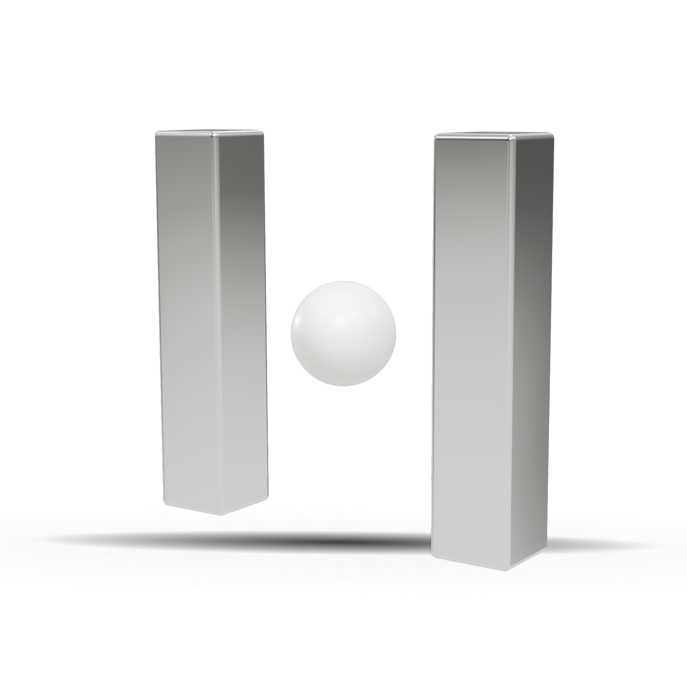
Middlemen sits between businesses and what they need next: buyers, partners, capital and the right rooms. We make the introduction, and we stay in the room until it closes. This book sets out how the brand looks, moves and speaks.
Every deal has two sides. Somebody has something to sell, somebody needs it, and most of the time they never meet.
The mark draws that moment. Two pillars stand for the two sides. The point between them is Middlemen: small, exact, and the reason the two sides hold together.
Keep a clear space of one pillar width, marked x, on every side. Nothing else enters that space: no type, no edges, no other logos.
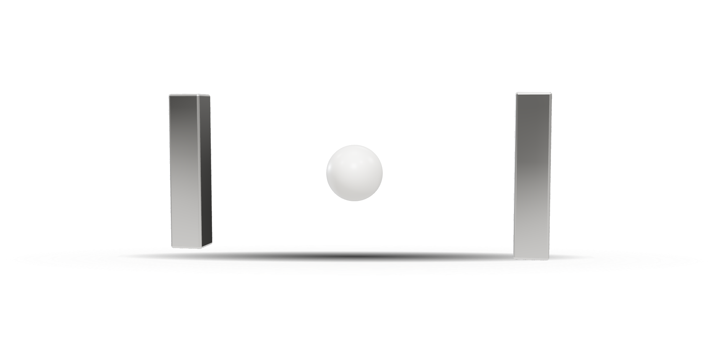
The 3D mark is a real object in a dark studio. It is photographed, never decorated. Treat it like a product shot.
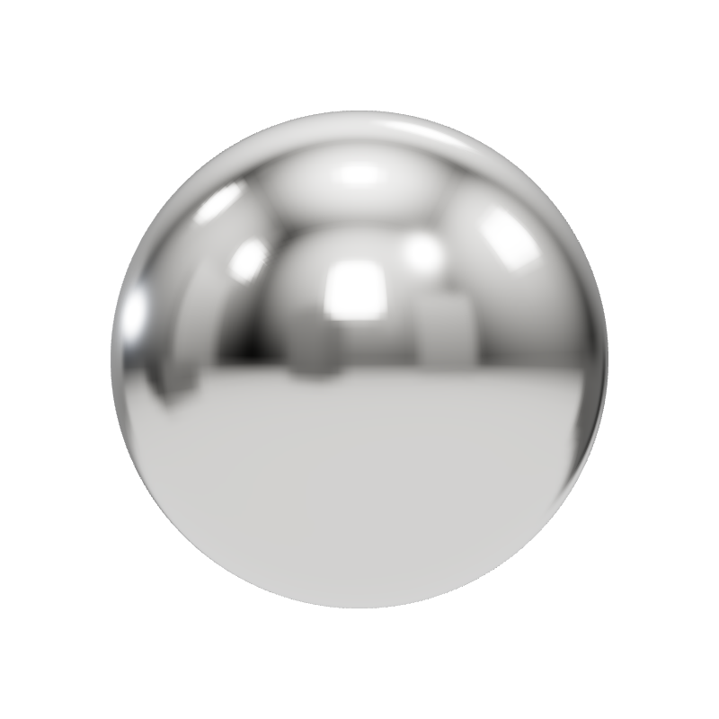
ChromePillars, by default. Merch foil and reflective print.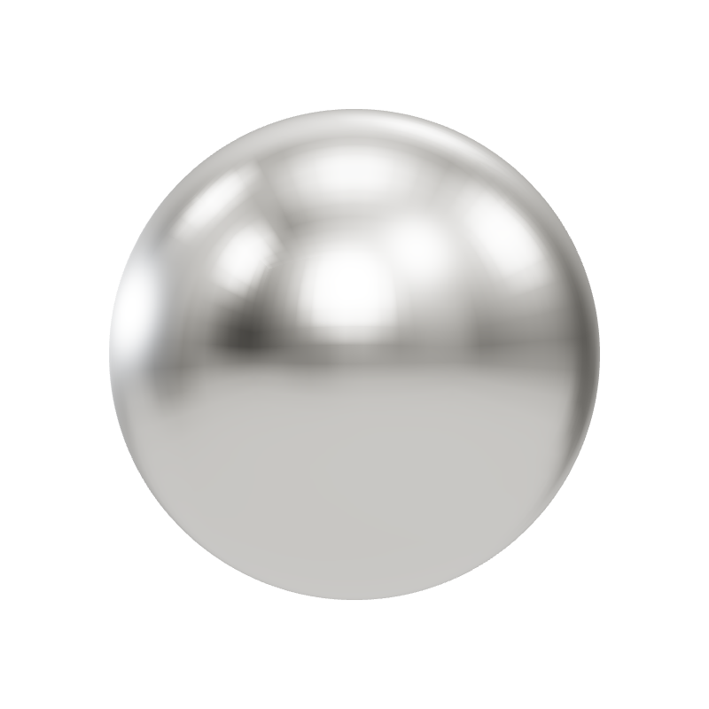
SatinBrushed metal for signage, plaques and hardware.
BoneThe point, by default. Ceramic, enamel, embroidery thread.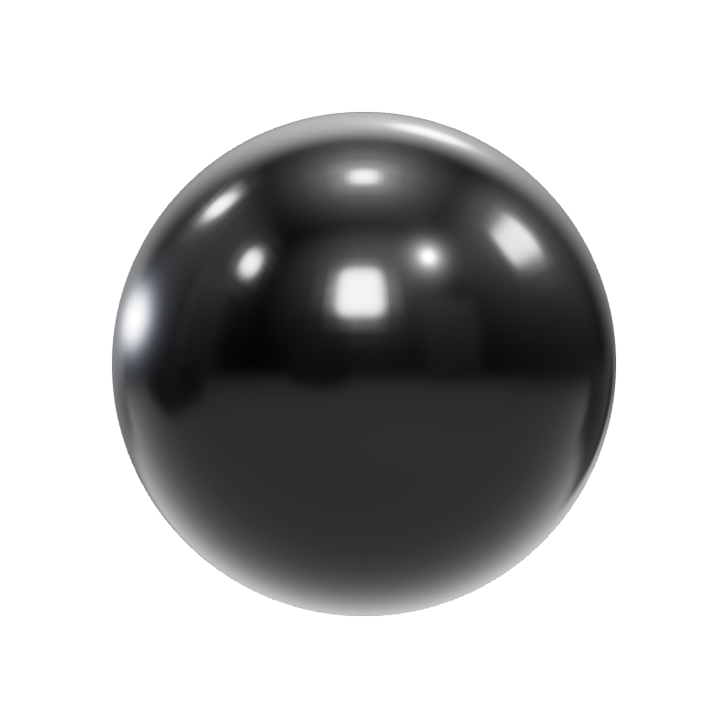
GraphiteGloss black for objects on light grounds and limited pieces.
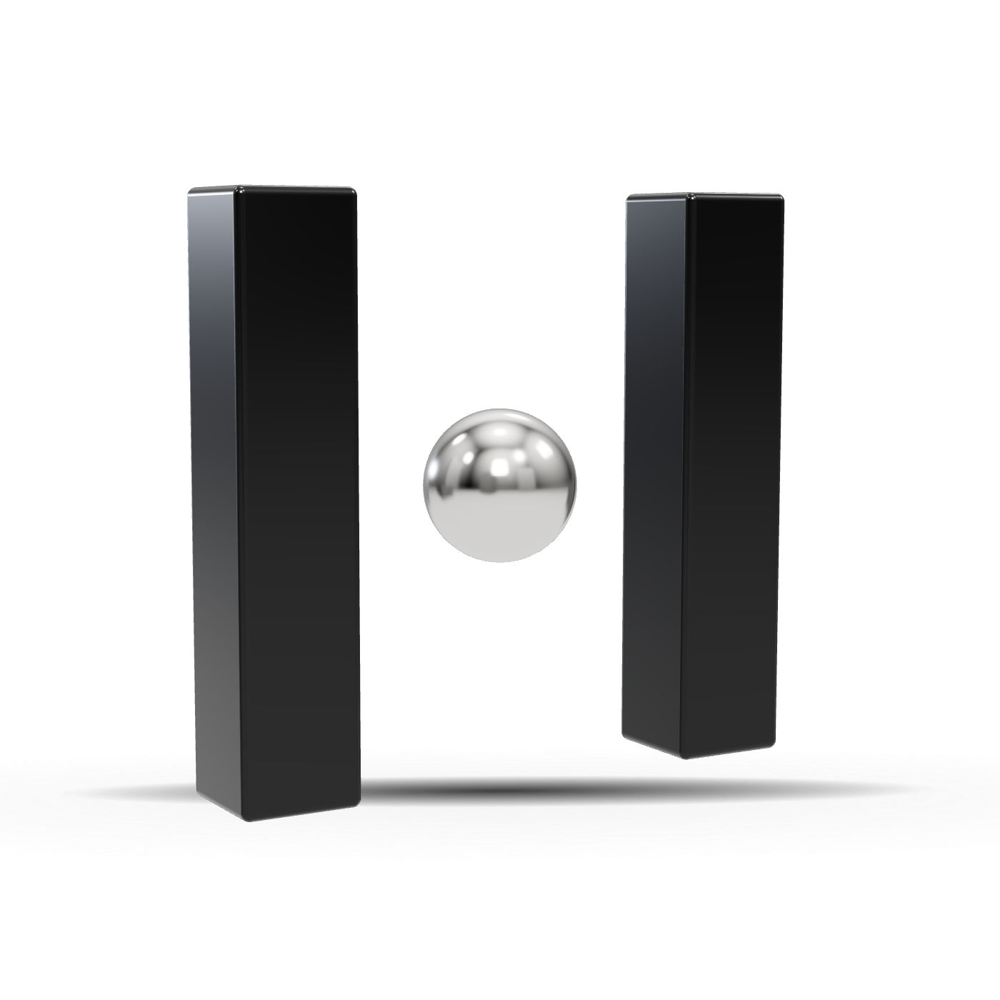
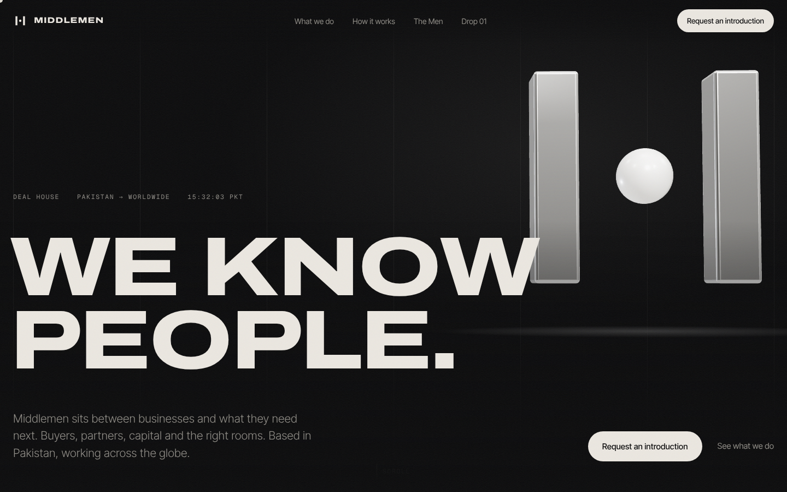
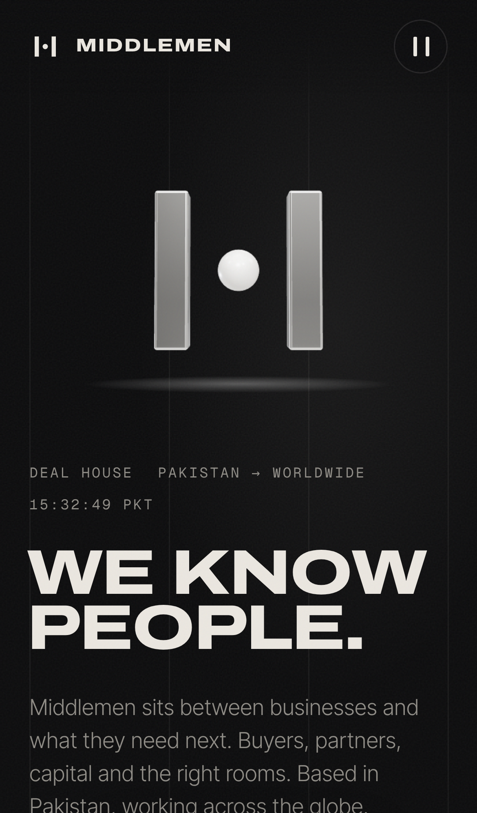
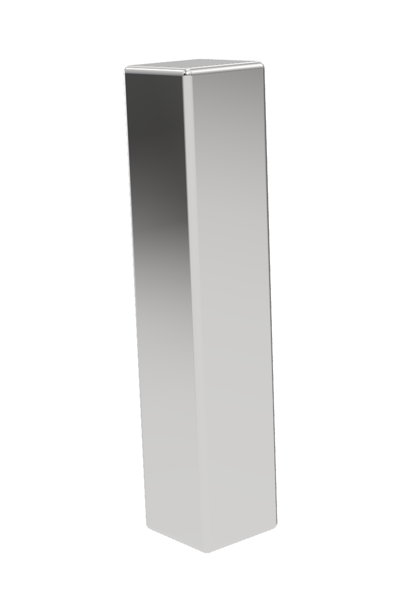